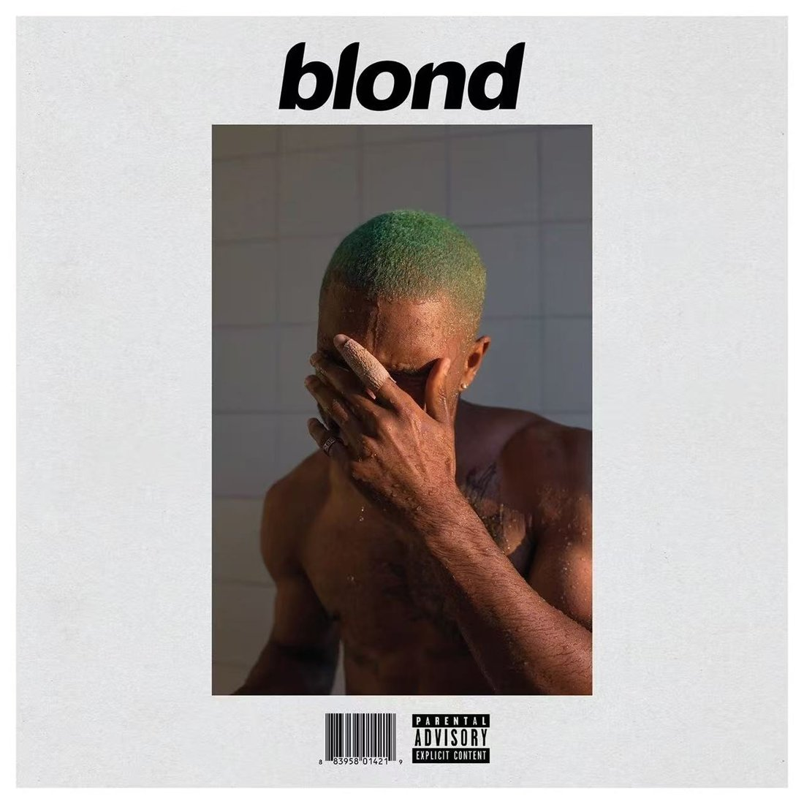

The artist studies
Frank Ocean
The things a voice leaves unsaid.
Frank Ocean is an American singer and songwriter raised largely in New Orleans. He first reached a wide audience through the 2011 mixtape nostalgia, ULTRA, then released channel ORANGE in 2012 and Blonde in 2016. His music moves between R&B, pop, rap, and arrangements that leave a great deal of space around the voice. What interests me is his attention to ordinary details: a car ride, a room, a remembered conversation. These small scenes give the listener something concrete to hold while the songs move through feelings that remain difficult to name.
Background: Wikipedia artist overview ↗

The focus-work module
Self Control

Blonde / 2016
A question to explore
How does the move from a close, exposed voice to overlapping vocal layers change our sense of who is speaking, and to whom?
On your next listen
- The altered vocal tone at the beginning.
- The space between guitar and vocal phrases.
- How the layered closing voices change the scale of the song.
Release information: Album listing ↗. The question and listening prompts are editorial interpretations.